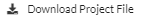
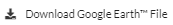

Export¶
The Export menu provides options to export LINKPlanner project and Google Earth™ export files.
Export Menu¶
LINKPlanner Project Export¶
To export LINKPlanner project, click Export menu then click . When the project is ready to export, the icon changes to . Click on to download the project.
Export to Google Earth™¶
To export files to Google Earth™, click Export menu then click . When the project is ready to export, the icon changes to . Click on to save the KMZ file locally. Open this file in Google Earth as usual for KMZ files.
60 GHz cnWave cnMaestro Export¶
To export the information required to import into cnMaestro and automatically populate the network information, click Export, then 60 GHz cnWave cnMaestro Export. Then select from the following options.
Nodes - creates a file with all the radios, both DN and CN and their parameters
Links - creates a file with all the links, both DN to CN and Mesh
Only radios that are configured for 60 GHz and have both a MAC Address and MSN populated will be exported.
There are a few extra fields created in the nodes export file which are not stored in LINKPlanner. These fields need to be manually edited in the exported file.

If there are changes to the project, the export files are removed, and the Export menu options revert to the original icons